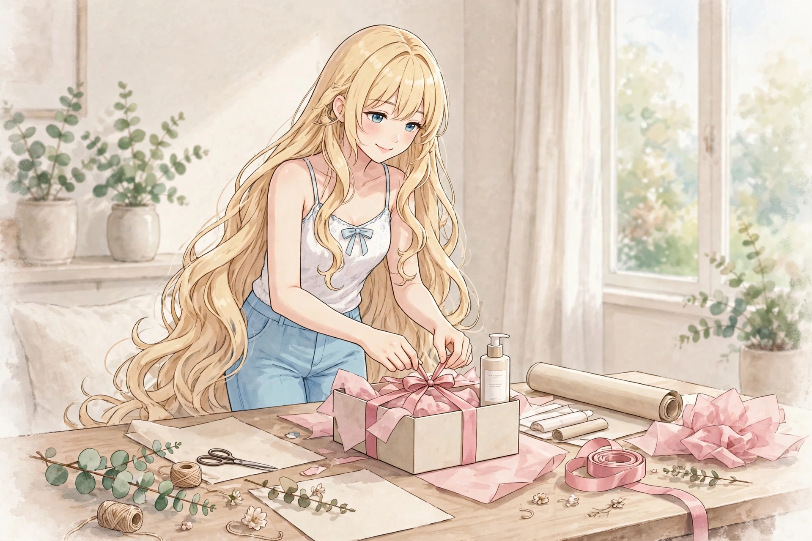

トップ ＞ スキンケア ＞ スキンケアをプレゼントする時の選び方
スキンケアをプレゼントする時の選び方
スキンケアアイテムは、見た目も華やかで贈り物に向く一方、毎日肌に使うものだけに、選び方には配慮が要ります。相手の好みや今の手順が分からない場合は、特に慎重さが求められます。この記事では、贈る側の視点での確認点を整理します。
顔に使うものは、相手を知っている場合に絞る
美容液やクリームなど顔に使うアイテムは、相手の肌の好みや、今使っているものの傾向を知っている場合に選ぶのが無難です。よく知らない相手には、ハンドクリームのように、顔以外の小さい部位から使えるものや、洗い流すタイプのものが、相手の手順を乱さずに渡せます。
相手が普段使っているブランドや系統を知っている場合は、その延長で選ぶと、手持ちのアイテムと役割が重なりにくくなります。
香りと質感は、控えめで軽いものを基準に
香りは好みの分かれる要素の筆頭です。贈り物では、香りの強さが控えめなもの、質感の軽いものを基準にすると、相手の生活場面を選ばず使ってもらいやすくなります。香りの説明表示を読んで、強さの表現にも目を通しておきましょう。
質感については、こっくり重いものより、さらっとしたものの方が、季節を問わず手に取ってもらいやすい傾向があります。
サイズと期限も、贈る側の配慮
相手が初めて使うアイテムは、使い切りやすい小さめのサイズが向きます。大きいサイズは、使い切るまでの期間が長く、相手の負担になることがあるからです。贈る前に使用期限の表示を確認し、期限に余裕のあるものを選ぶのも配慮のひとつです。
渡すときに「香りは控えめのものを選んだよ」と一言添えると、相手は安心して使い始められます。選び方の気持ちが伝わることも、贈り物の大切な部分です。
避けた方がよい選び方も挙げておきます。香りの強いもの、開封後の期限が短いもの、相手の年齢や見た目に踏み込んだメッセージの強いものは、贈り物としては扱いが難しくなります。逆に、相手の生活場面を思い浮かべて選んだものは、金額の大小にかかわらず気持ちが伝わります。旅行の多い相手には携帯しやすい形、家でゆっくり過ごす相手には据え置きの形、というように、場面で選ぶ視点が役に立ちます。迷ったときは、自分の使ってよかった消耗品の中から、香りの穏やかなものを選ぶのが、実感のこもった贈り方です。その際は、自分が使った期間や、使う場面を短く添えると、相手の使い方の参考になります。贈り物は渡して終わりではなく、相手が無理なく使い切れるかどうかまで含めて、選び方の責任範囲だと考えています。

セラフィナ「顔に使うものは相手を知っているときに。香りは控えめ、サイズは使い切りやすくね」

セラフィナ｜美容の道具箱の案内役
「量と表示が分かれば、美容は失敗しない。」——セラフィナと白猫のモコが、買う前のチェックポイントを案内します。綺麗になりたい気持ちに正直に、でも表示は冷静に読むのが、このサイトの約束です。